Rendered with mistune.
Source Week14_HFT_FPGA_Advisor_Digest.md was not found in the workspace, so this v2 digest was rebuilt from the current audited artifacts.
This addendum is presentation-ready but deliberately conservative.
Hard boundaries:
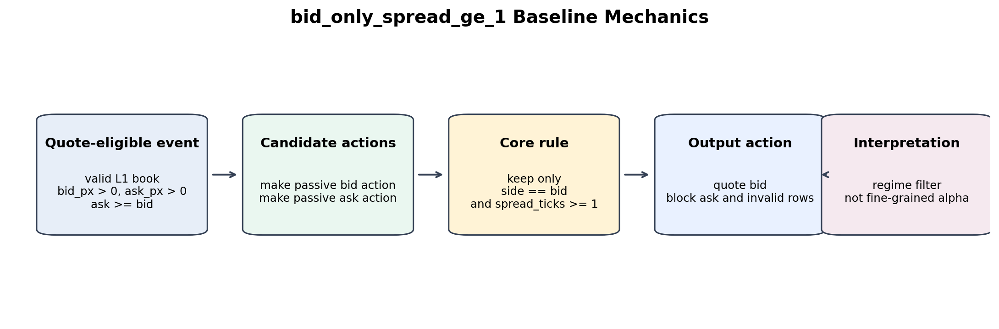
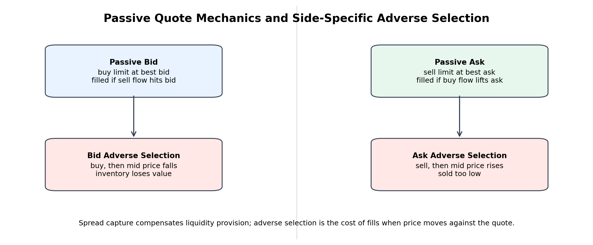
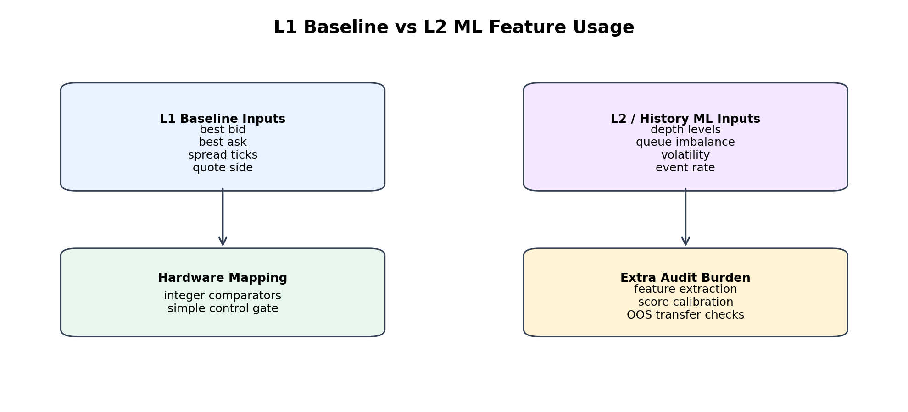
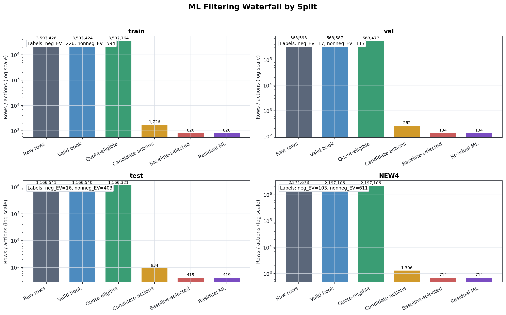
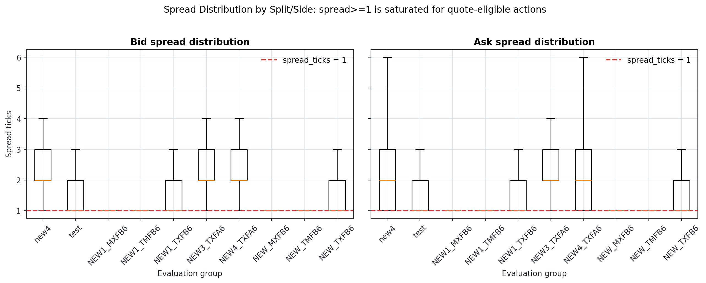
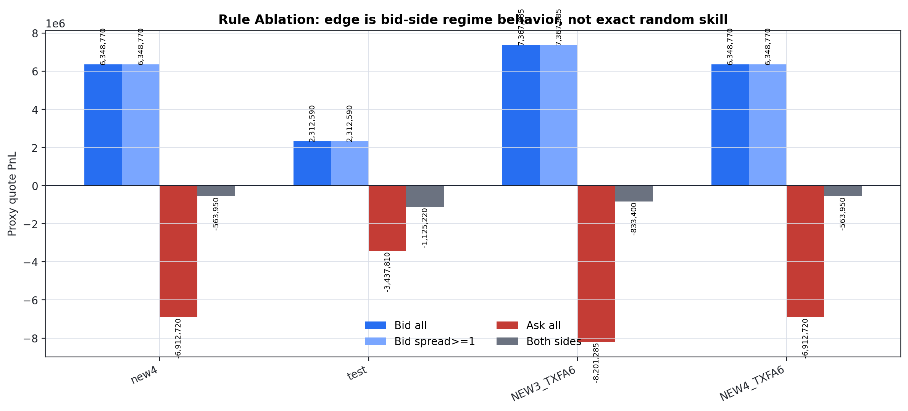
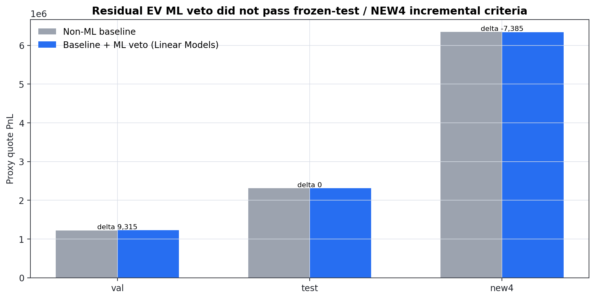
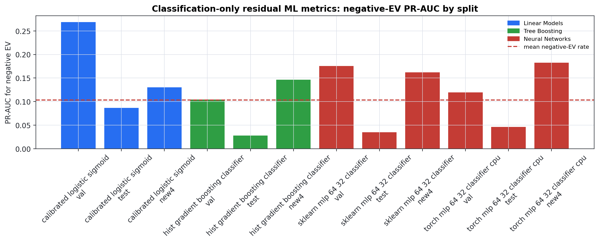
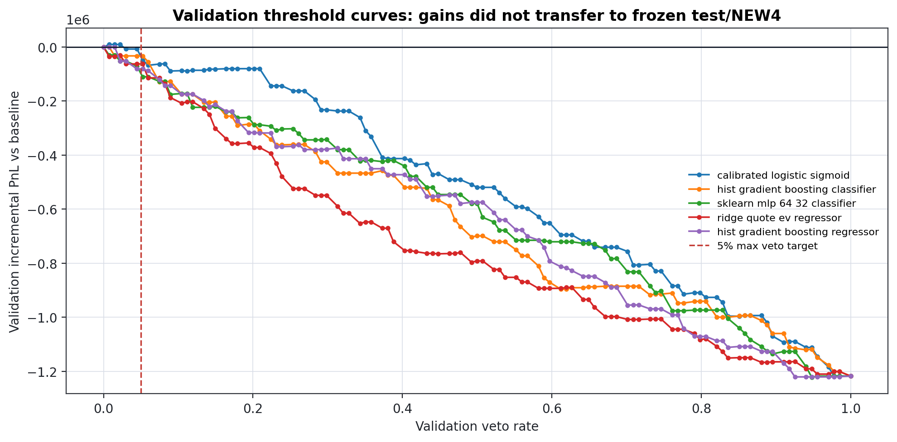
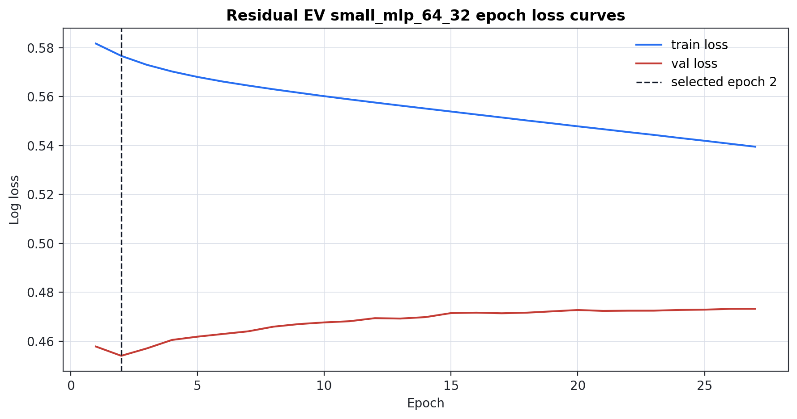
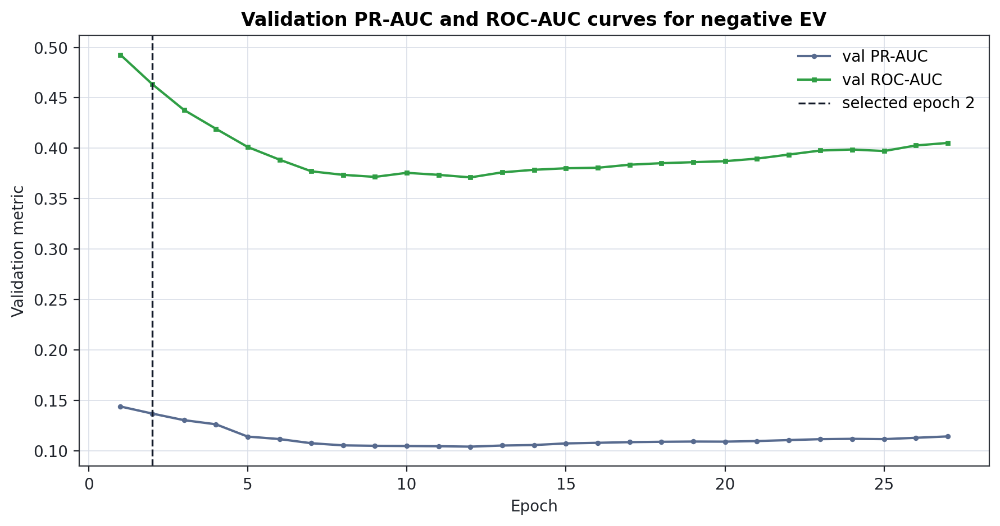
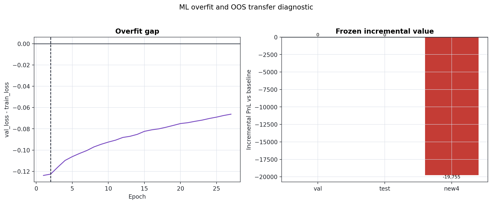
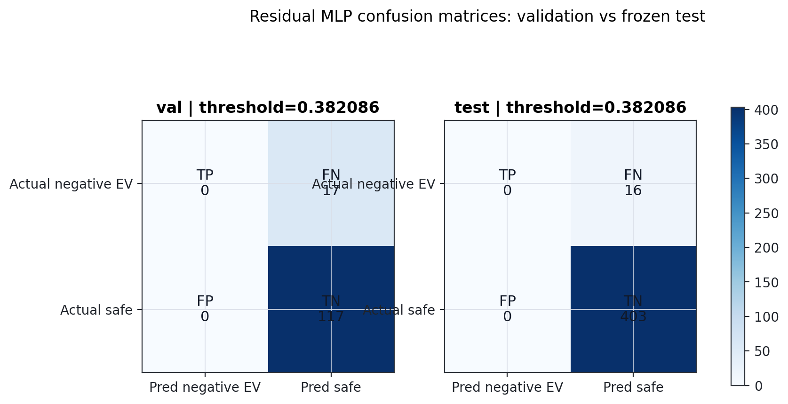
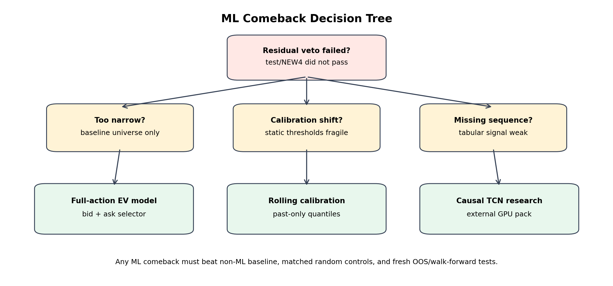
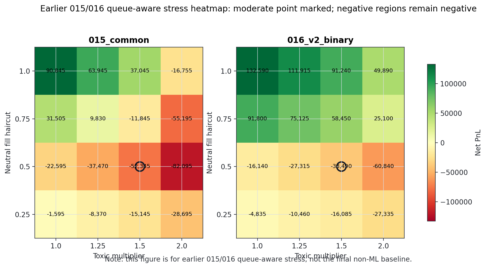
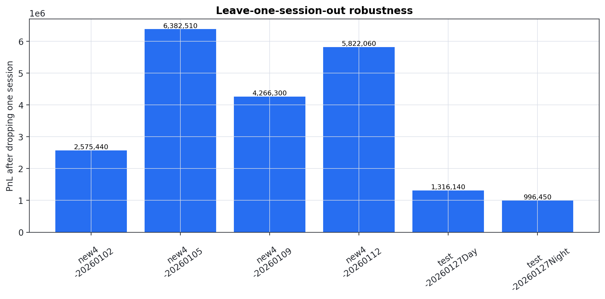
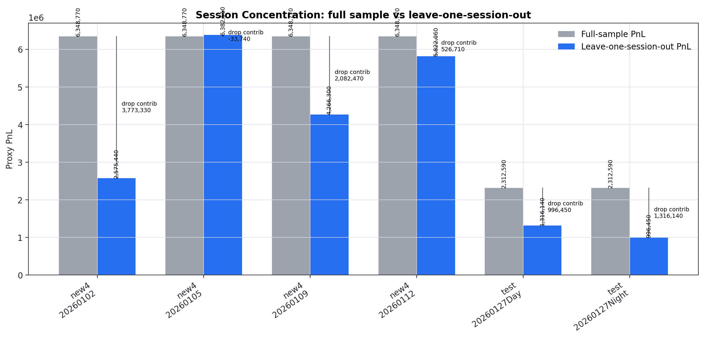
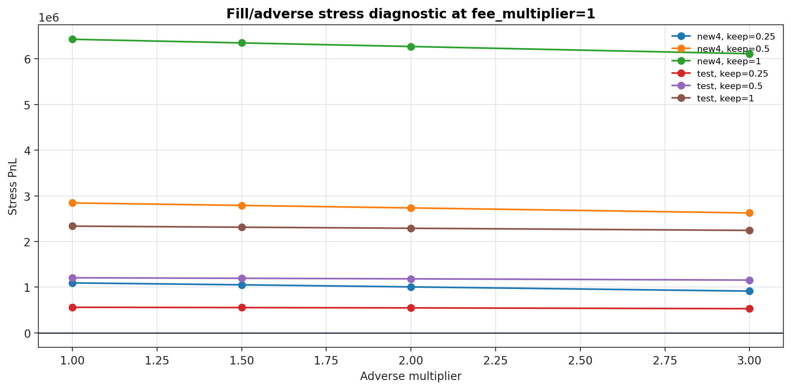
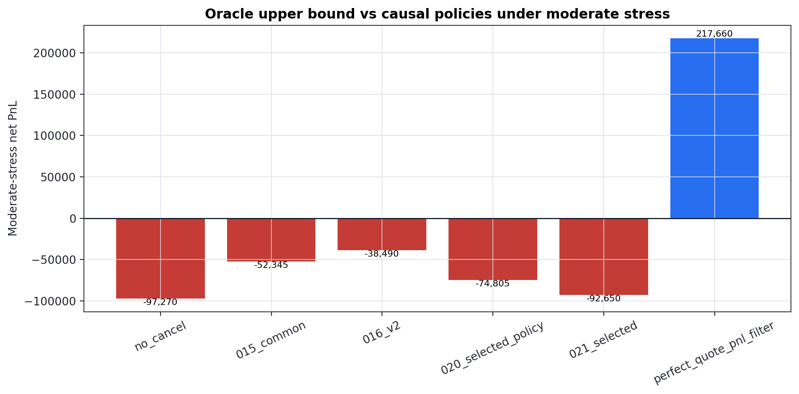
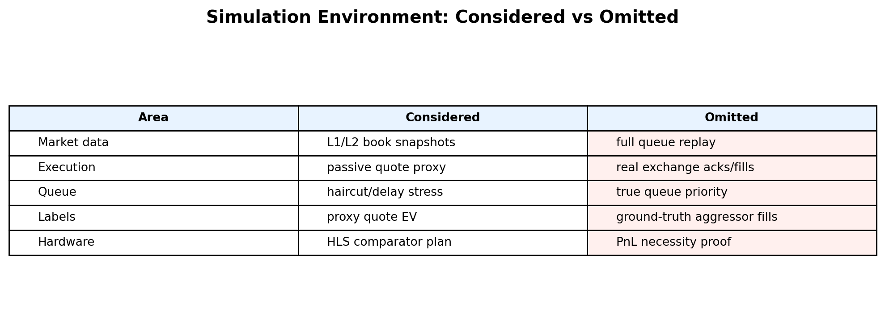
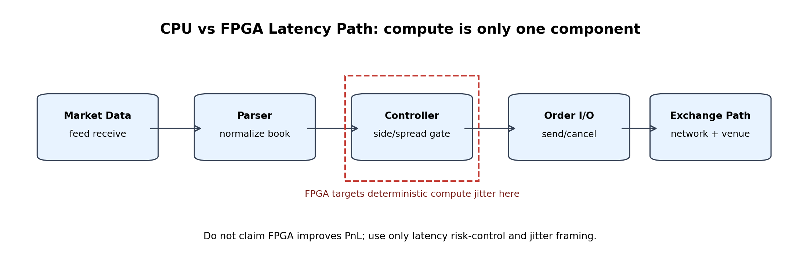
The final non-ML controller is bid_only_spread_ge_1.
Decision logic:
side == bid and spread_ticks >= 1.Important interpretation:
spread_ticks >= 1 is saturated.Figure: figures/baseline_flowchart.png.
A passive market maker posts limit orders instead of crossing the spread.
Side-specific adverse examples:
The project uses proxy quote EV and stress-adjusted fill assumptions because true exchange fills and queue position are not available.
Figure: figures/quote_bid_ask_diagram.png.
The deployed baseline uses only L1-level information:
The rejected ML extensions used richer causal features derived from L2 or event history, such as queue imbalance, depth ratios, volatility, and event rate. Those features may still be useful for future research, but they did not pass the incremental value criteria in the residual-veto setting.
This distinction matters for hardware design: the baseline maps to simple comparators, while ML/L2 policies require feature extraction, score calibration, and additional audit burden.
Figure: figures/l1_l2_book_diagram.png.
This table traces the data flow used by the residual Quote-EV ML veto diagnostics. Counts are split-specific and are read from frozen artifacts; no model is retrained here.
Pipeline meaning:
raw_rows: selected-symbol input rows before the local filter stage.valid_book_rows: rows with valid top-of-book/depth after the book-validity filter.quote_eligible_rows: rows admitted into the quote/action source universe. For NEW4, this equals the external OOS valid-book action source because NEW4 was not used for training or validation selection.candidate_actions: passive bid/ask candidate fills generated by the fill-proxy action table.baseline_selected_actions: candidate actions selected by bid_only_spread_ge_1.residual_ml_samples: the residual EV-veto dataset restricted to the baseline-selected universe.negative_ev_labels / nonnegative_ev_labels: final residual label counts using quote_ev_moderate < 0.| split | raw_rows | valid_book_rows | quote_eligible_rows | candidate_actions | baseline_selected_actions | residual_ml_samples | negative_ev_labels | nonnegative_ev_labels | negative_ev_rate | source_note | baseline_to_candidate_rate | residual_to_baseline_rate |
|---|---|---|---|---|---|---|---|---|---|---|---|---|
| train | 3593426 | 3593424 | 3592764 | 1726 | 820 | 820 | 226 | 594 | 0.27561 | Historical split from 016 quote-eligible universe, then Phase 031 full-action table. | 0.475087 | 1 |
| val | 563593 | 563587 | 563477 | 262 | 134 | 134 | 17 | 117 | 0.126866 | Historical split from 016 quote-eligible universe, then Phase 031 full-action table. | 0.51145 | 1 |
| test | 1166541 | 1166540 | 1166321 | 934 | 419 | 419 | 16 | 403 | 0.0381862 | Historical split from 016 quote-eligible universe, then Phase 031 full-action table. | 0.448608 | 1 |
| NEW4 | 2274678 | 2197106 | 2197106 | 1306 | 714 | 714 | 103 | 611 | 0.144258 | External OOS NEW4 used the valid-book controller/action-source flow; no train/val quote-eligible refit or boundary tuning was applied. | 0.546708 | 1 |
C:\Users\holbo\00VS_projjects\00_HFT_project\new_era\16_binary_label_v2\results\filter_waterfall_by_split.csv.C:\Users\holbo\00VS_projjects\00_HFT_project\new_era\31_opportunity_cost_audit\data\full_action_universe.parquet.C:\Users\holbo\00VS_projjects\00_HFT_project\new_era\28_residual_quote_ev_veto\data\baseline_universe_quote_ev.parquet and C:\Users\holbo\00VS_projjects\00_HFT_project\new_era\28_residual_quote_ev_veto\data\new4_baseline_universe_quote_ev.parquet.C:\Users\holbo\00VS_projjects\00_HFT_project\new_era\34_report_expansion_figures_and_methods\results\new4_raw_valid_book_counts.csv.This project intentionally distinguishes missingness from zero-valued metrics.
A blank cell or NaN should never be read as a hidden zero.
| Cell representation | Meaning | Typical reason | Interpretation rule |
|---|---|---|---|
| Empty string / blank cell | Not computed in that artifact | Metric did not belong to the table or the upstream script did not produce it | Do not compare numerically; inspect the table note/source artifact |
NaN |
Computation was attempted but undefined | No samples in a subgroup, one-class label vector, or division by zero denominator | Treat as undefined, not as pass/fail by itself |
NA / not_applicable |
Metric is structurally not applicable | Example: regression metric for a pure classification-only plot | Exclude from aggregate comparisons |
source_missing |
Required upstream source artifact or source column was absent | Placeholder reports or compatibility audits | The claim is unsupported until the source is regenerated |
0 or 0.0 |
Computed numeric zero | Count, PnL, loss, or rate genuinely evaluated to zero | It is a real value and can be compared numerically |
For final advisor-facing tables, any ambiguous blank from older phases should be read alongside the nearest status, note, source_note, or report paragraph.
New Phase 034 follow-up tables use explicit note/status columns where a source was not available or a metric is not applicable.
The Phase 032 exact matched random quote baseline produced p-value 1.0 and zero variance. That is not evidence against or for the controller; it is a saturation diagnostic.
Why it saturates:
side == bid and spread_ticks >= 1.spread_ticks >= 1.Correct wording: the exact matched random test is non-informative for quote-selection skill.
Forbidden wording: the baseline beat exact matched random quote selection.
The ML workstreams tested whether residual ML could improve the conservative baseline by vetoing bad quotes inside the bid_only_spread_ge_1 universe.
Inputs and safeguards:
Observed outcome:
Conservative interpretation: residual ML did not pass the incremental-value standard. This does not prove all ML is useless; it says this residual veto framing was too narrow or unstable.
Phase 034 recovered this gap by running small_mlp_64_32_epoch_rerun on the same residual universe with validation-only early stopping. The real epoch curves are now included as figures/ml_epoch_loss_curves.png, figures/ml_epoch_metric_curves.png, and figures/ml_overfit_diagnostic.png.
The recovered curves improve transparency but do not revive ML: the frozen rerun still failed to improve both test and NEW4 over the non-ML baseline.
All residual ML families in Phase 28/30 used the same causal residual EV tabular feature set unless noted otherwise.
spread_ticksqueue_imbalance_calcdeep_imbalance_calctop_depthdepth_ratiovolatility_past_50abs_return_past_50event_rate_past_50queue_imbalance_change_pastnormalized_spread_calcqueue_imbalance_calc, deep_imbalance_calc, top_depth, depth_ratio.queue_imbalance_calc, deep_imbalance_calc, depth_ratio.volatility_past_50, abs_return_past_50, event_rate_past_50, queue_imbalance_change_past.spread_ticks, normalized_spread_calc.| Model family | Color | Input format | Uses L2 depth | Uses imbalance ratios | Uses rolling/lagged features | Sequence window | Feature columns |
|---|---|---|---|---|---|---|---|
| Linear Models (Logistic) | #276ef1 |
Tabular | Yes | Yes | Yes | None | spread_ticks, queue_imbalance_calc, deep_imbalance_calc, top_depth, depth_ratio, volatility_past_50, abs_return_past_50, event_rate_past_50, queue_imbalance_change_past, normalized_spread_calc |
| Tree Boosting (HGB) | #2f9e44 |
Tabular | Yes | Yes | Yes | None | spread_ticks, queue_imbalance_calc, deep_imbalance_calc, top_depth, depth_ratio, volatility_past_50, abs_return_past_50, event_rate_past_50, queue_imbalance_change_past, normalized_spread_calc |
| Neural Networks (MLP) | #c43c35 |
Tabular | Yes | Yes | Yes | None | spread_ticks, queue_imbalance_calc, deep_imbalance_calc, top_depth, depth_ratio, volatility_past_50, abs_return_past_50, event_rate_past_50, queue_imbalance_change_past, normalized_spread_calc |
| Sequence Models (TCN) | #7a4cc2 |
Causal sequence | Yes | Yes | Yes | Default 50 rows |
spread_ticks, queue_imbalance_calc, deep_imbalance_calc, top_depth, depth_ratio, volatility_past_50, abs_return_past_50, event_rate_past_50, queue_imbalance_change_past, normalized_spread_calc over a past-only window |
small_mlp_64_32_epoch_rerun, on the shared tabular feature set.50 rows.new_era/30_ml_training_adequacy_audit/export/ml_training_pack/05_tcn_sequence_training.py.--window 50.Conservative note: richer feature use does not imply deployable value. Residual ML still failed the frozen incremental-value hurdle.
The conservative baseline has two pain points:
bid_all, not fine-grained quote selection.Future ML routes should avoid repeating the residual-veto trap:
Any comeback must still beat strong non-ML baselines, matched random controls, and fresh OOS/walk-forward tests.
Figure: figures/ml_future_work_decision_tree.png.
The report separates three types of evidence:
The stress figures should be read as robustness diagnostics. They do not replay real exchange queue priority or acknowledge true fill events.
Queue-aware stress is implemented as a proxy stress framework.
Exact proxy formula from new_era/18_queue_aware/queue_stress_core.py:
delay <= 0, pull_eff[t] = pull[t]; otherwise pull_eff[t] = pull[t - delay] and the first delay rows cannot be cancelled by that signal.neutral_u <= neutral_fill_haircut.good_u <= good_fill_haircut.future_mid_return_H_ticks > 0; ask fill is favorable when future_mid_return_H_ticks < 0.extra_mult = max(toxic_multiplier - 1, 0).max(0, -future_mid_return_H_ticks).max(0, future_mid_return_H_ticks).toxic_penalty_ticks = extra_mult * adverse_ticks.cash -= bid_price * POINT_VALUE + toxic_penalty_ticks * POINT_VALUE; fees += MAKER_FEE; inventory += 1.cash += ask_price * POINT_VALUE - toxic_penalty_ticks * POINT_VALUE; fees += MAKER_FEE; inventory -= 1.cash - fees + inventory * final_mid * POINT_VALUE.Equivalent single-fill final mark-to-market contribution:
(final_mid - bid_price) * POINT_VALUE - toxic_penalty_ticks * POINT_VALUE - MAKER_FEE.(ask_price - final_mid) * POINT_VALUE - toxic_penalty_ticks * POINT_VALUE - MAKER_FEE.These stressors are useful for conservative sensitivity analysis, but they are not true queue replay. The data lacks real order IDs, acknowledgements, queue position, and exchange-level fill priority.
quote_ev_moderate is a simulator-derived proxy label. It is not a true exchange queue replay label, and it does not use real queue position, order acknowledgements, or exchange fill IDs.
C:\Users\holbo\00VS_projjects\00_HFT_project\new_era\26_robust_baseline_side_aware\baseline_utils.py around line 75 (actions_from_frame).C:\Users\holbo\00VS_projjects\00_HFT_project\new_era\27_non_ml_final_baseline_audit\common_027.py around line 185 (quote_value_for_stress).C:\Users\holbo\00VS_projjects\00_HFT_project\new_era\28_residual_quote_ev_veto\common_028.py around line 194 (baseline_universe).C:\Users\holbo\00VS_projjects\00_HFT_project\new_era\18_queue_aware\queue_stress_core.py around line 60 (build_action_table).H = 10 ticks.label_horizon_ticks = 10 and future_mid_return_H_ticks in new_era/16_binary_label_v2/outputs/binary_labels_v2.parquet.build_new4_frame(horizon_ticks=10).ask[t+1] <= bid[t].bid[t+1] >= ask[t].price = bid_px_1[t].price = ask_px_1[t].final_mid = last(mid_price) within the same session.For an action with side-specific future markout:
side_markout = future_mid_return_H_ticks for bid
side_markout = -future_mid_return_H_ticks for ask
adverse_ticks = max(0, -side_markout)
terminal_ticks = final_mid - quote_price for bid
terminal_ticks = quote_price - final_mid for ask
eligible = neutral_u <= neutral_fill_haircut
quote_ev = terminal_ticks * POINT_VALUE - MAKER_FEE - max(toxic_multiplier - 1, 0) * adverse_ticks * POINT_VALUE
quote_ev_stressed = quote_ev if eligible else 0
Constants used by the current proxy implementation:
POINT_VALUE = 200.0.MAKER_FEE = 15.0.neutral_u is a deterministic stable random mask keyed by event/action and side; it is fixed across stress settings for comparability.| Stress level | neutral_fill_haircut | toxic_multiplier | cancel_delay_ticks |
|---|---|---|---|
| base | 1.00 | 1.00 | 0 |
| mild | 0.75 | 1.25 | 0 |
| moderate | 0.50 | 1.50 | 0 |
The residual ML label uses the moderate setting: quote_ev_moderate = quote_ev_stressed under neutral_fill_haircut=0.5, toxic_multiplier=1.5, and delay=0.
This formula is a proxy quote-EV label. It is useful for controlled falsification and stress tests, but it should not be described as realized exchange PnL or true queue-aware fill toxicity.
Oracle policies use future information and are not tradable. They answer a feasibility question: is positive moderate-stress PnL mathematically available in the proxy environment?
Two relevant oracle concepts:
A large gap between the oracle and causal policies means opportunity exists in the proxy data, but current causal rules or ML features do not capture it reliably.
| Area | Considered | Omitted |
|---|---|---|
| Market data | Best bid/ask, spread, L2-derived features for ML diagnostics | Full order-by-order queue reconstruction |
| Execution | Passive quote proxy and stress-adjusted quote EV | Real exchange acknowledgements and cancellations |
| Queue | Haircuts and delay stress proxies | True queue priority and order ID matching |
| Labels | Simulator-derived quote EV and toxicity proxies | Ground-truth aggressor-side exchange fills |
| Hardware | HLS-friendly comparator logic and latency framing | Proof that FPGA deployment improves PnL |
All profitability statements must remain proxy statements.
Figure: figures/simulation_environment_table.png.
Latency should be decomposed into separate components:
Conservative FPGA claim:
Figure: figures/latency_path_diagram.png.